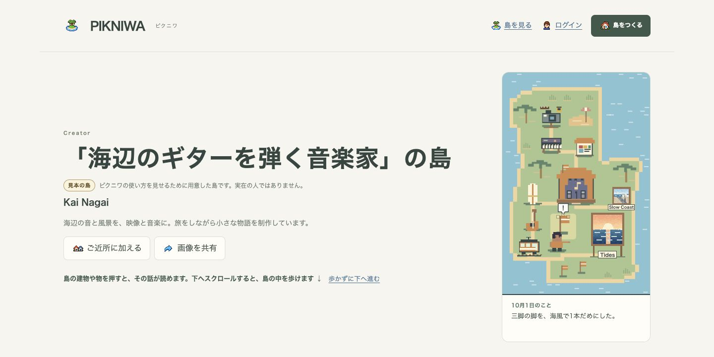
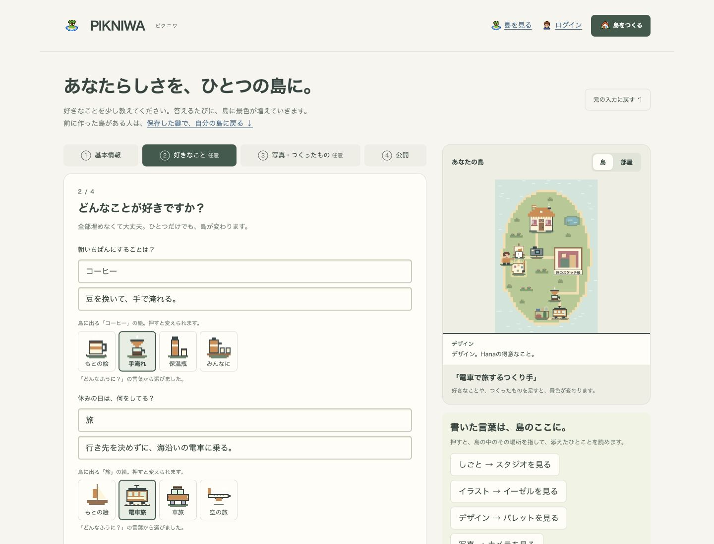

好きなことが、
ドット絵の島に。
好きなことや、つくったものを書くと、島に建物や飾りが生まれます。そこに今日の一言や写真を置いていくサービスです。

リンク一覧ではなく、景色にする
プロフィールのサービスは、名前や自己紹介、SNSをカードやリンクで並べるものが中心です。ピクニワでは、書いたことをそのまま建物や家具、道具にして、ひとつの島にします。
同じ「音楽」でも、「海辺でギターを弾く」のような一言で絵が変わります。島の物を押すと、その人が添えた話を読めます。
作って終わりにしない
島を作って眺めるだけだと、見たあとに何も起きず、もう一度来る理由がありません。そこで、持ち主が近況を置きに来て、それが島に積もり、知り合いが変化を見に来る、という形にしました。
クエストや素材集めで島を育てる方向にはしていません。空白の日があっても、罰や順位はありません。

はじめ方
- トップで好きなことを切り替えて、島の変化を試す（登録はいりません）
- 質問に答えて、自分の島をつくる
- 保存すると、自分の島のURLができる
- 今日の一言や写真を置く。日記は公開・非公開を選べます
ログインは任意です。ログインしない場合は、保存した鍵で自分の島に戻ります。